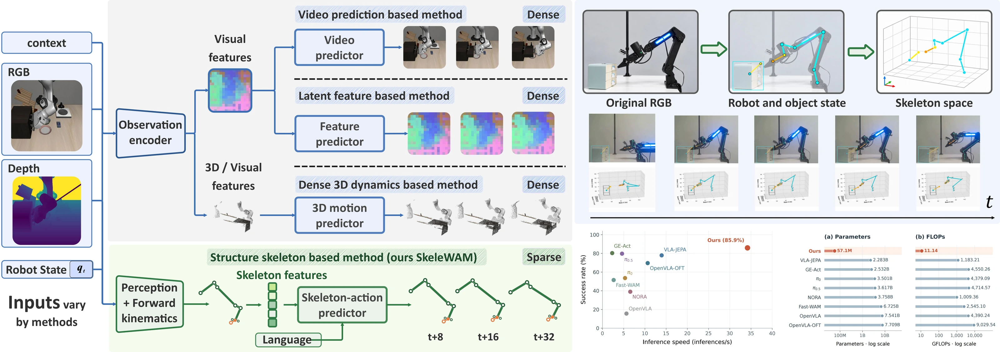
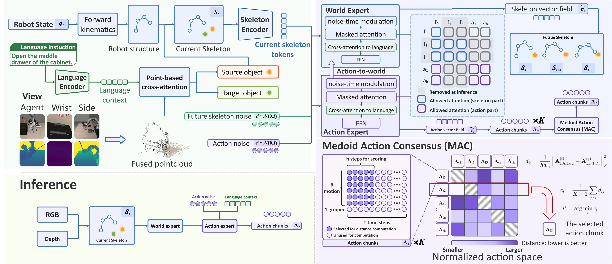
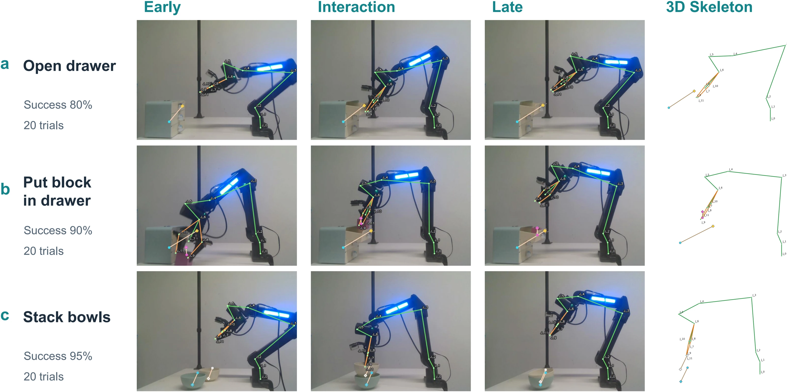
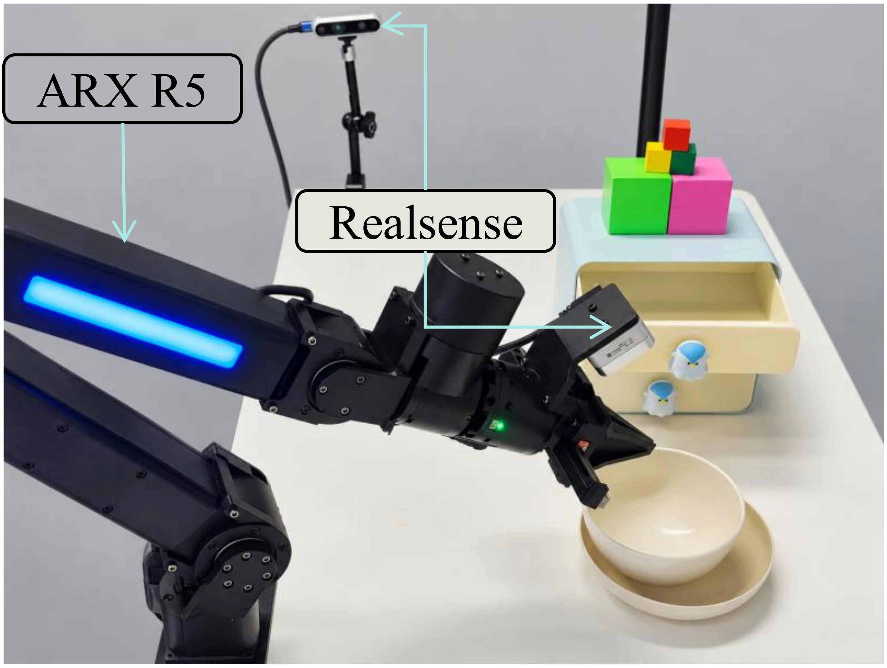

Build the skeleton
Combine object landmarks from RGB-D perception with robot joints from forward kinematics, in a shared robot-centric frame.
Skeleton World-Action Modeling
for Efficient Robotic Manipulation
A world action model that learns to manipulate
through sparse 3D robot–object structure.
LIBERO-Plus success
Model parameters
Camera perturbation success
Real-world average success
Results reported in the manuscript · RGB-D observation setting
Robot joints, object centers, and interaction points form a shared geometric language for action and prediction.
World action models combine action generation with future-state prediction. SkeleWAM represents the scene as a compact 3D skeleton, built online from RGB-D observations and robot proprioception. The skeleton makes the geometry of robot–object interactions explicit.
During training, the model learns actions and future skeletons together. At inference, it generates actions from the current skeleton and language instruction. Future prediction supports learning without requiring visual reconstruction.

Explore recorded robot interactions and their skeleton visualizations, from multiple viewpoints.
Unable to load this video. Open the video file.
“Open drawer.”
Skeleton views show reconstructions from recorded interactions. RGB clips are separate task recordings. Success rates below are the evaluation results reported in the manuscript.
Future skeletons provide geometric supervision during training. At inference, the model generates actions directly.
Combine object landmarks from RGB-D perception with robot joints from forward kinematics, in a shared robot-centric frame.
Jointly train action generation and future skeleton prediction with flow matching, using the current skeleton and language context.
Medoid Action Consensus selects a representative sampled action chunk. Execute a prefix, update the skeleton, and replan.

Learning the future helps the present. Adding future-skeleton supervision improves LIBERO-Plus success from 80.1% to 85.9%, with the same action-only inference procedure.Table 3b, manuscript
+5.8percentage pointsZero-shot evaluation on 10,030 LIBERO-Plus variants across seven perturbation categories.
+3.7 points over Cosmos-Policy
+17.6 points over Cosmos-Policy
Parameters in the RGB-D setting
| Method | Parameters | Overall ↑ | Camera ↑ | Layout ↑ |
|---|---|---|---|---|
| π0.5 | 3.3B | 79.7 | 70.6 | 84.1 |
| VLA-JEPA | ~2B | 77.9 | 64.2 | 83.9 |
| GE-Act | 2.2B | 80.3 | 60.7 | 80.2 |
| Cosmos-Policy | 2B | 82.2 | 75.8 | 82.2 |
| SkeleWAM OURS | 57.1M | 85.9 | 93.4 | 66.6 |
Table 1, manuscript. SkeleWAM uses RGB-D observations. The separate sim-state reference uses privileged simulator coordinates and reaches 87.7% overall.
| Method | Camera | Robot | Language | Light | Background | Noise | Layout |
|---|---|---|---|---|---|---|---|
| Cosmos-Policy | 75.8 | 63.3 | 81.7 | 96.5 | 88.9 | 92.7 | 82.2 |
| SkeleWAM | 93.4 | 71.9 | 89.1 | 94.7 | 96.0 | 93.9 | 66.6 |
Where there is room to improve. Layout changes remain challenging: SkeleWAM reaches 66.6% compared with 84.1% for π0.5. Sparse geometry alone does not resolve generalization to substantially different spatial arrangements.
An ARX R5 with external and wrist-mounted RealSense cameras. Five tasks, 20 trials per task, for each method.
Mean success across five tasks

| Method | Open drawer | Close drawer | Stack blocks | Stack bowls | Block in drawer | Average ↑ |
|---|---|---|---|---|---|---|
| Fast-WAM | 80 | 85 | 80 | 85 | 85 | 83 |
| π0.5 | 80 | 80 | 70 | 75 | 75 | 76 |
| Cosmos-Policy | 85 | 85 | 90 | 90 | 85 | 87 |
| SkeleWAM | 80 | 90 | 90 | 95 | 90 | 89 |
Table 2, manuscript. The average is the unweighted mean across the five tasks.

@unpublished{sheng_skelewam,
title = {SkeleWAM: Skeleton World-Action Modeling
for Efficient Robotic Manipulation},
author = {Sheng, Juyi and Wang, Hua and Liu, Mengyuan},
note = {Manuscript}
}